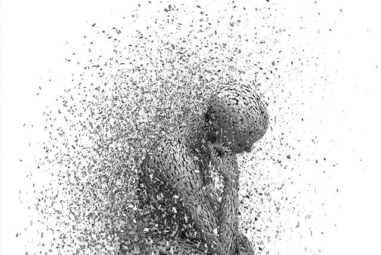
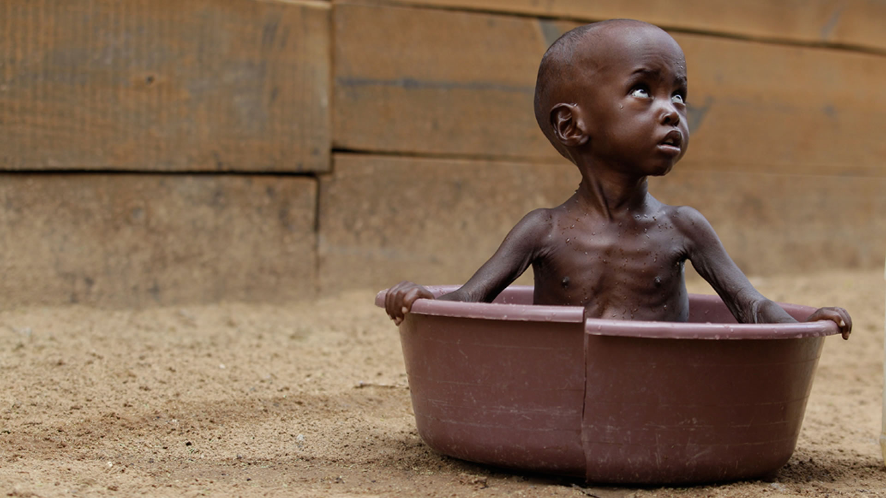
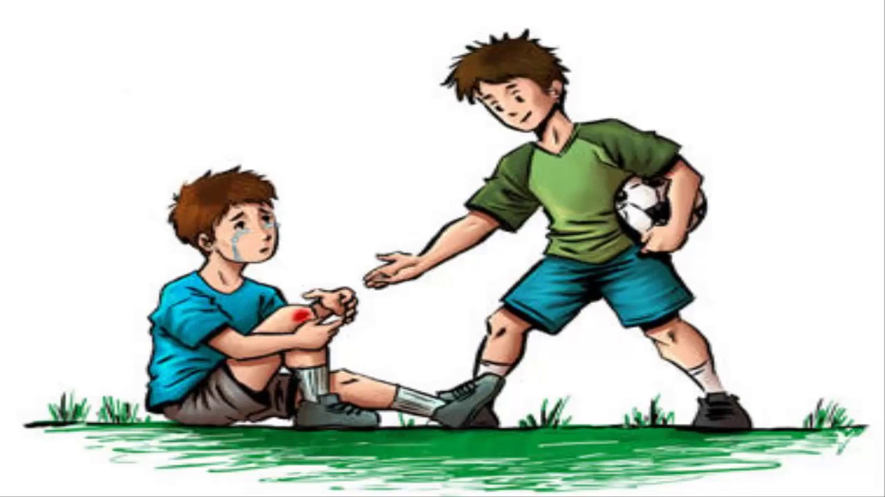
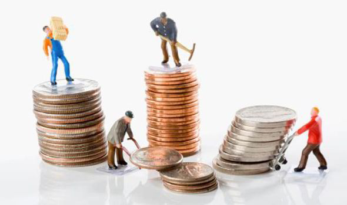

Todos tenemos batallas

Las personas creen que solo ellos son las que tienen dificultades y calamidades, pero la realidad es que cada persona sobre este mundo pasa por su propio infierno aquí en la tierra.
Lo que para muchos es algo impensable para otros puede ser una realidad, en muchos países cientos de personas mueren de hambre o por alguna enfermedad no letal que podría ser curada con algunos centavos, pero como no todos tenemos las mismas posibilidades aquellos que tienen poco están condenados a vivir en un verdadero infierno y no nos referimos a puntos de vista o menera de ver las cosas hablamos de un infierno real que cada día es ganado con sudor y lagrimas, pero como la gran mayoria de nosotros no hemos pasado ni 3 días de hambre no sabremos lo que es eso.
¿Existen la esclavitud en este siglo?

Si existe algo de lo que la mayoría de perosnas se siente orgullosa es de decir que todos somos libre, tenemos libre expresión, derecho al voto y a decidir sobre cosas que nos copetan, pero la realidad es que hay muchas personas que no gozan de esto.
Lo unico cierto para esas personas es que la forma de salir de ese infierno es la muerte, pero por más cruel y sanginaria que sea la vida no estamos dispuestos a dejar la ir.
¿Qué podemos hacer?

Algo que no todos saben es que la mayoría de las cosas que compramos fueron hechas con manos de esclavos, pero las grandes compañias no diran nada porque esto podría arruinar su producción por eso se hacen de la vista gorda, pero por esa razón vez que lo que ellos fabrican tienen un precio tan asesible para todos.
La realidad es que las grandes marcas usan este metodo y las pequeñas que tienen un precio en sus productos un poco más alto usan la vía legal y seria de mucha ayuda que compraras esos productos de esa forma si todos lo hacemos podríamos hacer que esas pobre personas que son esclavas trabajen menos.
¿Si es cierto por qué nadie hace nada?

Porque todos los países del mundo se benedician de ello ya sea de manera directa o indirecta, casi toda la econimía mundial depende de ellos y nadie los ve porque están oculto de la vista de la mayoría, porque si todos supieran de donde vienen los chocolates que tantos nos gusta y los celulares que tanto usamos tal vez las cosas serían diferentes.
La gran mayoría de productos que consumimos diariamente fueron fabricados con manos de esclavos si fuera de otra manera no tuviera ese precio tan rentable ¿Crees que para que la humanidad progrese debe tener esclavos? ¿Qué tipo de politicas deberían implementarse para acabar con ello?Te dejo con estas preguntas para que reflexiones.